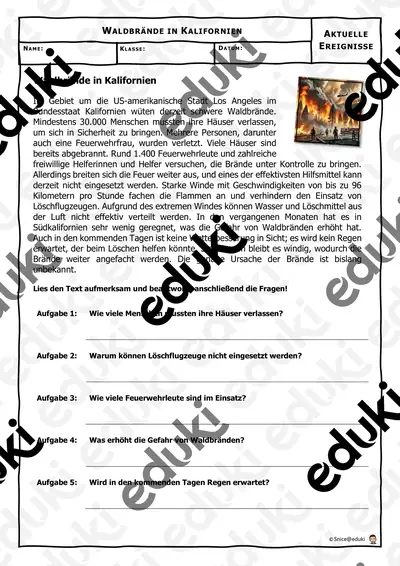

Homeschooling Materialpaket (wachsend) (auch Homeschooling)
14,99 €Material auf eduki ansehen
Homeschooling: interaktive und sehr aktuelle Arbeitsblätter zum Homeschooling (ständig wachsendes Materialpaket) zu allen Möglichen (aktuellen) Themen und Jahrgangsstufen. Auch zur Differenzierung im Unterricht sehr gut einsetzbar. Je früher Sie sich das wachsende Materialpaket, desto günstiger sichern Sie sich das wachsende Materialpaket. Viel Spaß!
FachBiologie
KlasseKl. 2–10
SchulformGrundschule, Sek I Mittlere Schulform, Material ist unabhängig von Schultyp & Klassenstufen, z.B. Agenda für Elternabend
MaterialartStundenentwürfe, Unterrichtsreihen, Arbeitsblätter, Stationenlernen
Ähnliche Materialien

Homeschooling Materialpaket (wachsendes Materialpaket) (auch Homeschooling)

Homeschooling Materialpaket (auch Homeschooling) Coronavirus (wachsend) - Materialpaket

Hamburger Speicherstadt Lückentext mit Wortspeicher Hörverstehen und Suchsel

Gehweg Lückentext mit Wortspeicher Hörverstehen und Suchsel

Angola Lückentext mit Wortspeicher Hörverstehen und Suchsel

Waldbrände in Kalifornien - Aktuelle Ereignisse

Erdbeben in Haiti - Rückblick - Aktuelle Ereignisse